.png)
[5961] 해외선물옵션 주문종합
글로벌 거래를 한 화면에서!
원스톱 종합 주문 솔루션
[5961] 해외선물옵션 주문종합 화면은 다양한 해외 거래소의 선물·옵션 상품을 실시간으로 조회하고 주문까지 연결해 주는 글로벌 통합 주문 창입니다. 시세, 차트, 뉴스, 주문 기능이 유기적으로 연동되어 있어 시장 변화를 즉각 포착하고 신속하게 대응할 수 있습니다.
가격 · 수량 입력, 주문 유형 선택, 체결 내역 확인 등 거래의 모든 과정을 한 화면에서 처리할 수 있으며, 환율 자동 반영, 거래 가능 시간 표시, 관심종목 연동 기능까지 지원하여 국가별 거래 환경 차이로 인한 불편을 최소화했습니다.
복잡한 상품 주문도 간단하게,
이 화면이 글로벌 주문의 컨트롤타워인 이유!
| 특징 | 이런 점이 좋아요 |
|---|---|
| 다양한 거래대상 통합 | 지수, 통화, 금리, 원자재 등 주요 글로벌 상품을 한 곳에서 주문 가능 |
| 실시간 시세 확인 | 선택한 선물 상품의 실시간 호가와 옵션 시세도 제공 |
| 관심종목 연계 주문 | 관심종목에서 바로 주문창으로 연결되어 신속한 매매 실행 |
| 잔고 및 체결 조회 | 주문과 동시에 잔고, 체결내역, 예수금 등을 실시간으로 확인 |
시세부터 주문까지 유기적으로 이어지는,
01 화면 구성
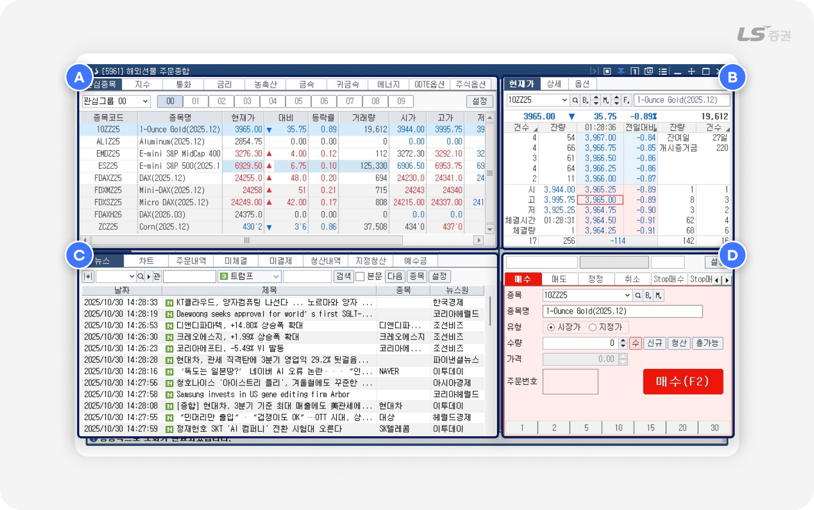
화면은 다음과 같이 4개의 영역으로 나누어집니다.
| 번호 | 영역 | 주요기능 |
|---|---|---|
| A | 시세 정보 | 해외선물옵션 관심종목 및 유형별 상품을 한눈에 확인 |
| B | 상품 상세 정보 | 선택 종목의 현재가 호가, 체결량, 상세정보 등을 실시간 조회 |
| C | 주문 체결 · 계좌 관리 | 주문과 동시에 잔고, 체결내역, 예수금 등을 실시간으로 확인 |
| D | 주문 실행 | 선택종목에서 바로 주문창으로 연결되어 신속한 매매 실행 |
시장의 신호를 해석하는 창,
02 시세 정보 (A영역)
관심종목
원하는 관심종목으로 구성한 나만의 시세 전광판을 관심그룹별로 분류하고 조회할 수 있습니다.
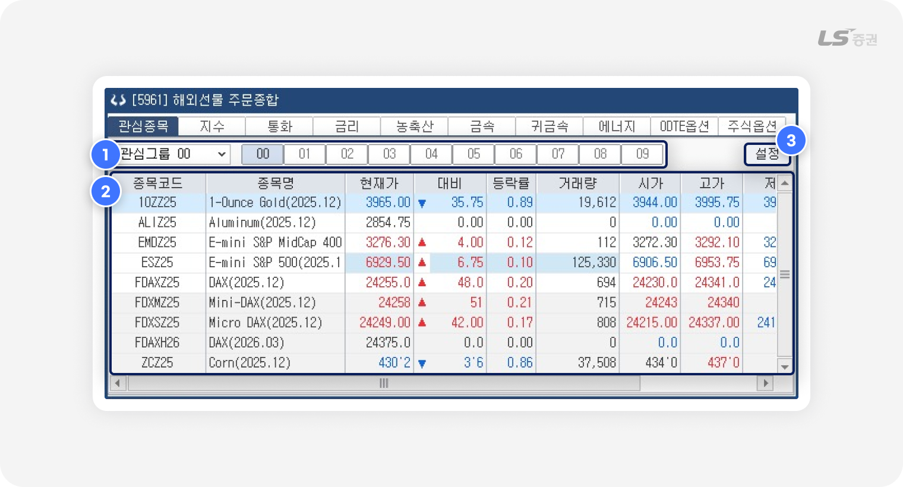
-
1
관심그룹 선택
- 00부터 09까지 설정된 관심그룹 중 하나를 목록 또는 버튼에서 선택하여 해당 그룹의 관심종목을 조회할 수 있습니다.
-
2
관심종목 조회
- 관심그룹에 소속된 관심종목을 조회합니다.
- 종목 선택 시 호가 정보(B) 및 주문 실행(D) 영역에 해당 종목 정보가 조회됩니다.
-
3
관심종목 설정
- 관심그룹별 관심종목의 구성을 편집할 수 있습니다.
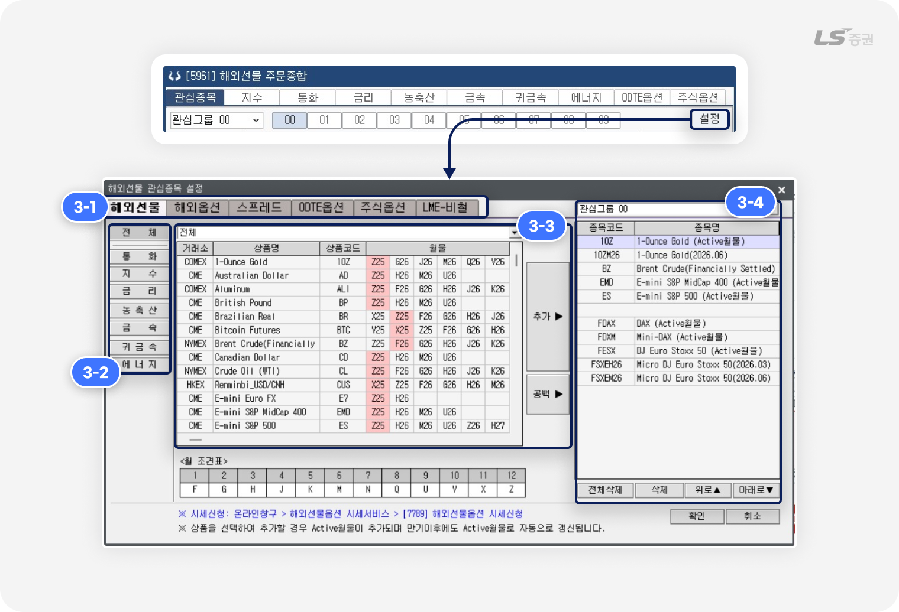
-
3-1
해외 파생상품 선택
- 해외선물, 해외옵션, 스프레드, ODTE옵션, 주식옵션, LME-비철중 선택할 수 있습니다.
-
3-2
상품 종류 선택
- 관심그룹에 소속된 관심종목을 조회합니다.
-
3-3
상품 선택 및 관심종목 등록
- 상품명 선택 시, 가장 가까운 만기의 월물을 자동으로 조회하는 종목이 관심종목으로 추가됩니다.
- 월물 선택 시, 해당 월물이 직접 관심종목으로 추가됩니다.
-
3-4
관심그룹별 관심종목 관리
- 관심그룹별로 종목 순서를 변경하거나 삭제할 수 있습니다.
유형별 상품 목록
선택한 유형의 상품별로 만기가 가까운 월물을 한 번에 조회할 수 있습니다.
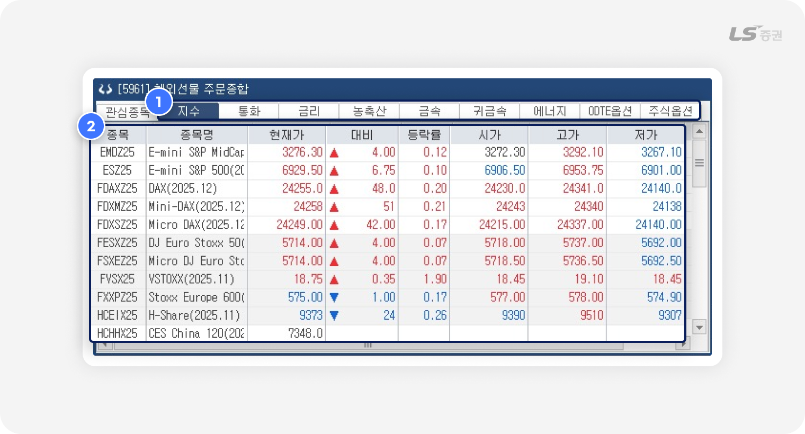
-
1
상품 유형 선택
- 지수, 통화, 금리, 농축산 등 해외선물옵션 상품을 유형별로 조회할 수 있습니다.
-
2
상품 조회
- 선택 유형으로 분류된 상품별로 만기가 가장 가까운 월물 종목정보와 해당 종목의 시세를 자동으로 조회합니다.
- 종목 선택 시 호가 정보(B) 및 주문 실행(D) 영역에 해당 종목 정보가 조회됩니다.
가치를 발견하고, 기회를 발굴하는
03 상품 상세 정보 (B영역)
현재가 호가
선택 종목의 매수/매도 5호가,체결량 정보, 만기일까지 잔여일수 등을 조회합니다.
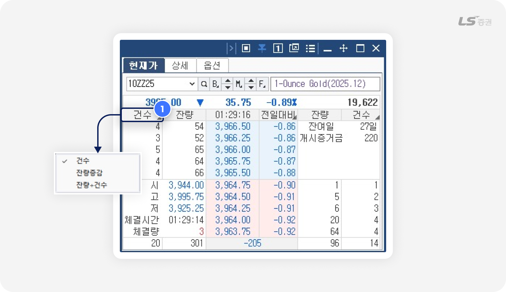
-
1
체결량 정보 표시 전환
- 호가별 체결량 표시 방법을 건수, 잔량증감, 잔량÷건수 중 선택할 수 있습니다.
종목 상세
선택 종목의 상세 정보를 조회할 수 있습니다.
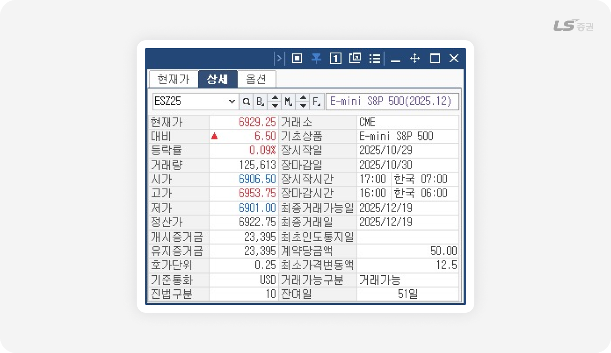
해외주식 소수점 거래, 1달러로도 주식을 살 수 있다고?
- 계약 시 필요한 증거금을 1계약 단위로 표시한 액수입니다. 예를 들어 개시증거금이 23,395 USD인 경우 신규 2계약을 체결하려면 개시증거금의 2배인 46,790 USD의 증거금이 필요합니다.
-
기 보유한 미결제약정을 유지하기 위해 계좌에 상시 보유해야 하는 최소한의 증거금입니다.
계좌의 예탁평가액이 유지증거금 아래로 떨어지면, 추가 증거금을 납부해야 할 수 있습니다.
- 해당 상품의 거래 및 결제가 가능한 통화 단위입니다. 예를 들어 USD로 표기된 경우해당 통화를 기준으로 한 예수금을 기준으로 거래하거나 예탁금, 보유잔고 등이 계산됩니다.
- 1호가당 변동하는 기준통화 기준의 가격 단위입니다. 예를 들어 최소가격변동액이 12.5이고 기준통화가 USD일 경우, 2호가 변동 시 25 USD 단위로 호가가 상승 또는 하락합니다.
옵션
선택한 기초자산의 만기월별 콜 · 풋 옵션의 주요 시세 정보를 한눈에 비교할 수 있습니다.
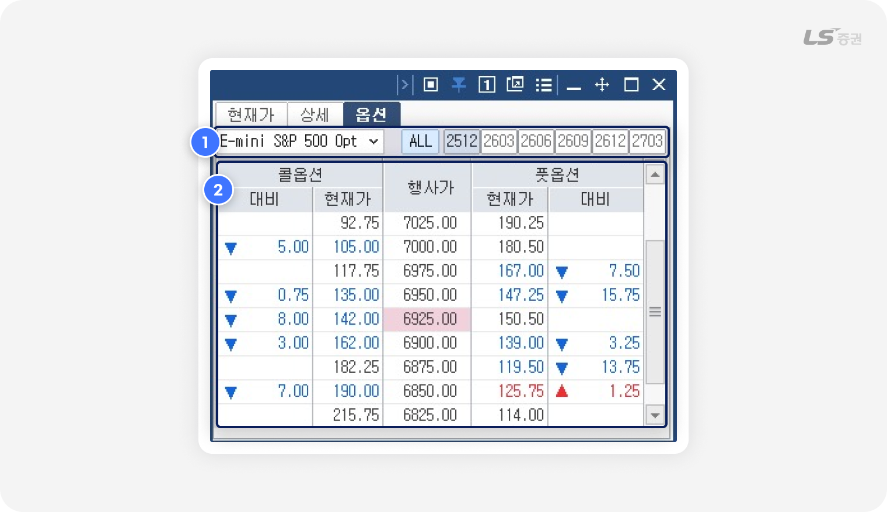
-
1
기초자산 선택
- LS증권에서 거래할 수 있는 기초자산 목록을 확인할 수 있으며, 기초자산을 선택하면 우측에 해당 기초자산을 기반으로 거래할 수 있는 옵션 월물이, 하단에 해당 종목의 행사가격별로 거래할 수 있는 월물의 콜옵션, 풋옵션의 현재가를 조회할 수 있습니다.
-
2
옵션 현재가
- 상단에서 선택한 기초자산과 월물의 콜옵션, 풋옵션을 행사가별로 조회합니다.
- 행사가별 콜옵션 또는 풋옵션 선택 시, 현재가 탭으로 이동하여 해당 옵션에 대한 상세 호가를 조회합니다.
뉴스에서 통찰을, 자산을 점검하며 전략을
04 주문 체결 · 계좌 관리 (C영역)
뉴스
선택 종목 또는 관련 시장 뉴스를 통해 시황 변화나 주요 이슈를 파악할 수 있습니다.
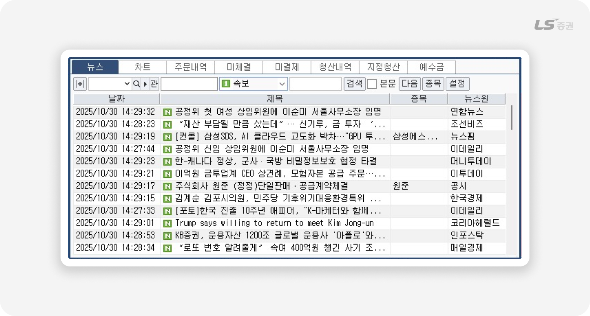
차트
선택한 종목의 가격 추세를 차트로 시각화하여 표시합니다.
기간별 · 분봉 · 틱 단위로 조회 범위를 설정할 수 있으며, 기술적 지표도 적용할 수 있습니다.
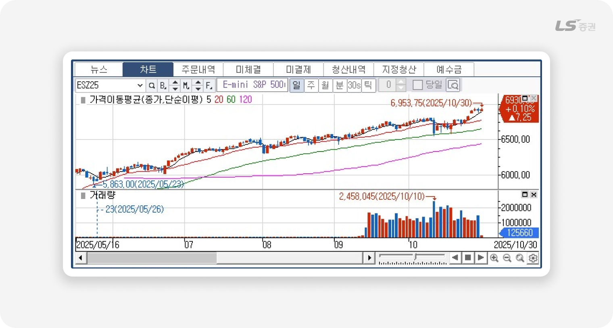
주문내역
당일 또는 특정일의 주문 내역을 체결별, 주문번호순, 종목별 등으로 간편하게 조건을 설정하여 조회할 수 있습니다.
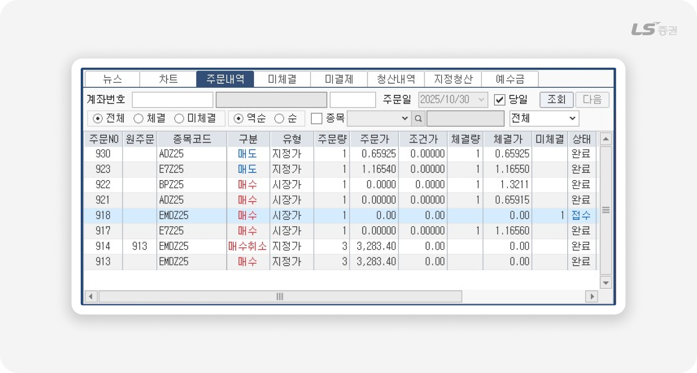
미체결
당일 또는 특정일의 전체 주문 내역을 상세하게 확인하고, 당일 체결 대기중인 주문을 취소할 수 있습니다.
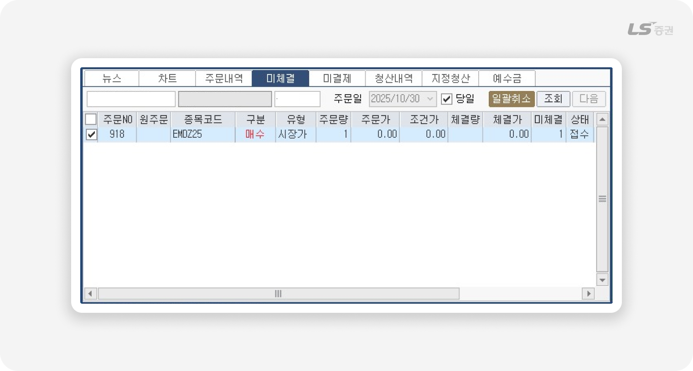
미결제
보유 잔고 현황과 평가손익, 수익률 현황을 조회하고, 잔고에 대해 일괄 청산 주문을 접수할 수 있습니다.
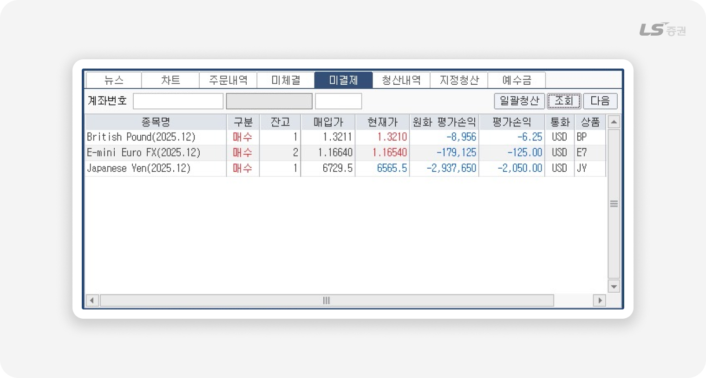
청산내역
지정 기간 동안의 종목별 청산내역 및 확정된 손익을 조회할 수 있습니다.
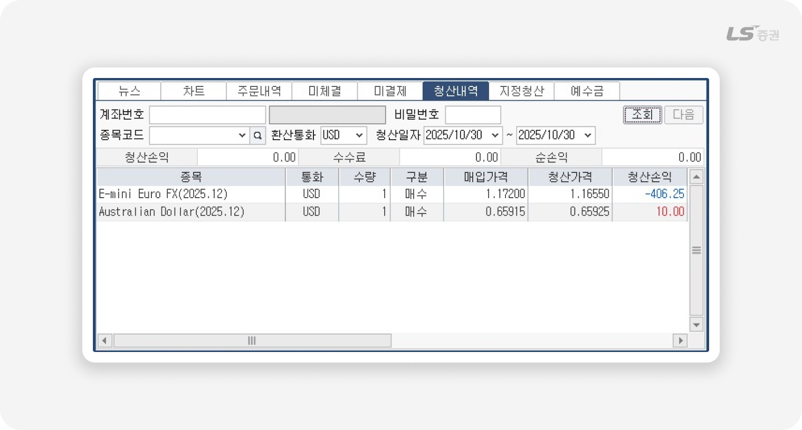
지정청산
보유 종목 중 특정 종목을 선택하여 청산 주문을 접수할 수 있습니다.
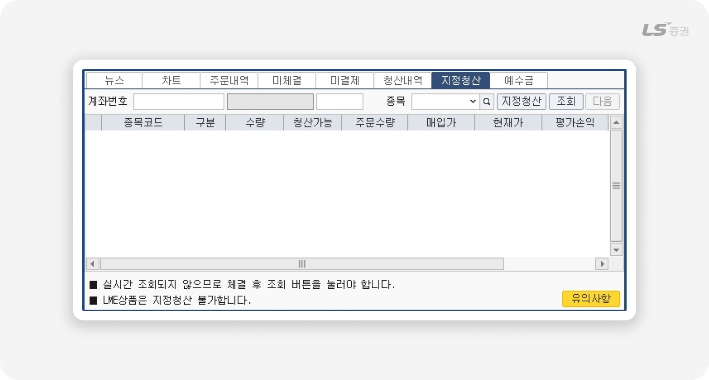
예수금
현재 보유 중인 외화 예탁금 현황과 선물 · 옵션 포지션 계약수, 평가손익 등을 조회할 수 있습니다.
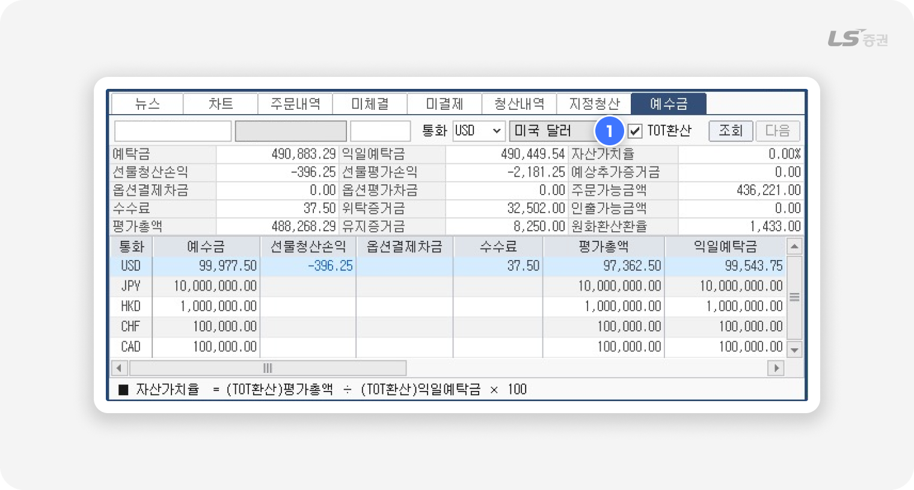
-
1
TOT환산
- 조회 계좌의 예수금 현황의 표시 기준을 설정합니다. 체크 시 매매기준율을 사용한 외화환산 총계를, 해제 시 매매기준율을 사용한 원화환산 총계를 조회할 수 있습니다.
주문도 원하는 맞춤 요건으로
05 주문 실행 (D영역)
매수 · 매도
종목을 선택한 뒤 수량 / 가격을 입력하고, 단축키로 주문을 빠르게 접수할 수 있습니다.
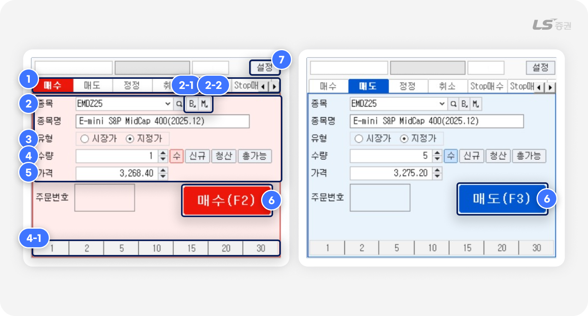
-
1
주문 버튼
- 매수 / 매도 / 정정 / 취소 / Stop매수 / Stop매도 / OCO매수 / OCO매도 중 선택할 수 있습니다.
-
2
종목 선택
- 원하는 종목을 직접 입력하여 검색하거나, 검색 아이콘을 클릭하여 팝업에서 상품군 분류에 따라 선택할 수 있습니다.
- (2-1번) B는 기초자산(Base) 상품군에서 원하는 상품을 선택할 수 있습니다.
- (2-2번) M은 조회중인 상품의 만기월물(Month)을 선택할 수 있습니다.
-
3
주문유형 선택
- 유형번호를 직접 입력하거나 드롭다운에서 주문유형을 선택할 수 있습니다.
-
4
주문 수량 입력
- 수량을 직접 입력하거나 ‘수’ 버튼을 클릭하여 팝업에서 수량을 선택할 수 있습니다.
- ‘신규’ 클릭 시 신규 주문 가능한 계약수가, ‘청산’ 클릭 시 청산 가능한 보유잔고가 입력됩니다.
- ‘총가능’ 버튼 클릭 시 신규 및 청산 가능한 총 주문가능 수량이 입력됩니다.
-
수량 입력 버튼(4-1번) 클릭 시 해당 수량이 누적 입력됩니다.
(예 : 매수 주문창에서 수량 '5' 와 '20' 버튼 클릭 시 '25'가 입력)
-
5
주문가격 입력
- 매수 / 매도 주문 가격을 직접 입력할 수 있습니다.
-
6
매수 주문 / 매도 주문
- 직접 클릭하거나 단축키로 매수 주문(F2) 또는 매도 주문(F3)을 할 수 있습니다.
-
7
설정
- 주문확인창, 수량 입력 버튼, 주문 후 초기화 등 주문 관련 설정을 할 수 있습니다.
정정 · 취소
미체결 주문을 정정 또는 취소할 수 있습니다.
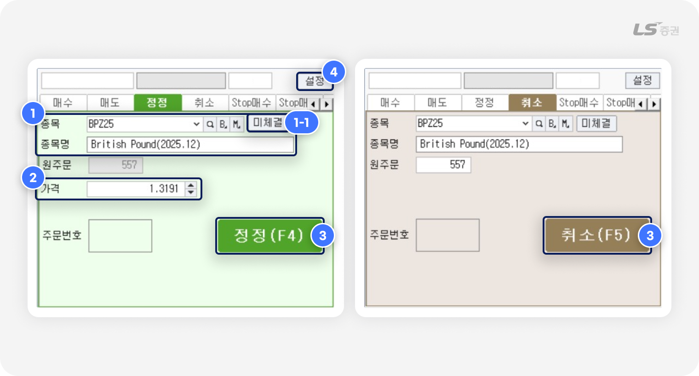
-
1
종목 선택
- 원하는 종목을 직접 입력하여 검색하거나, 검색 아이콘을 클릭하여 팝업에서 상품군 분류에 따라 선택할 수 있습니다.
- (1-1번) ‘미체결’ 버튼에서 미체결 주문을 확인하고 선택하여 종목과 원주문번호를 입력할 수 있습니다.
-
2
정정 주문가격 입력
- 정정 주문의 경우, 정정 가격을 직접 입력할 수 있습니다.
-
3
정정 주문 / 취소 주문
- 직접 클릭하거나, 단축키로 정정 주문(F4) 또는 취소 주문(F5)을 할 수 있습니다.
-
4
설정
- 주문확인창, 수량 입력 버튼, 주문 후 초기화 등 주문 관련 설정을 할 수 있습니다.
STOP 매수 · 매도
STOP 매수 · 매도는 손절매를 위한 조건 주문 중 하나입니다.
시장가격이 설정한 조건가격에 도달하면 조건주문이 시장가 또는 지정가로 전환되어 주문이 접수됩니다.
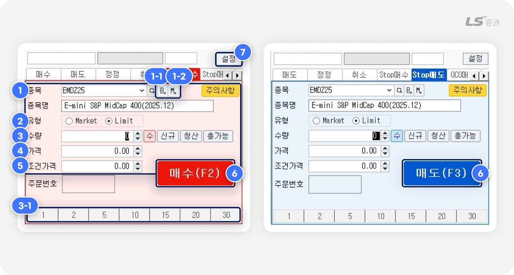
-
1
종목 선택
- 원하는 종목을 직접 입력하여 검색하거나, 검색 아이콘을 클릭하여 팝업에서 상품군 분류에 따라 선택할 수 있습니다.
- (1-1번) B는 기초자산(Base) 상품군에서 원하는 상품을 선택할 수 있습니다.
- (1-2번) M은 조회중인 상품의 만기월물(Month)을 선택할 수 있습니다.
-
2
주문유형 선택
- Market 주문, Limit 주문 중 선택할 수 있습니다.
분류 설명 STOP Market 주문 - 현재 가격보다 불리한 조건가격으로 주문을 접수한 뒤, 시장가격이 조건가격에 도달 시 시장가에 주문이 접수됩니다.
-
일반 주문은 불리한 조건가격으로 주문 접수 시 시장가에 즉시 주문이 체결되지만, STOP Market 주문은 조건가격에 도달하기 전까지 주문이 접수 및 체결되지 않습니다.
1) 매수주문 설정 규칙 : 조건가격 > 직전체결가(시장가격)
2) 매도주문 설정 규칙 : 조건가격 < 직전체결가(시장가격)
STOP Limit 주문 - STOP Market 주문과 동일하게 현재 가격보다 불리한 조건가격으로 주문을 접수한 뒤, 시장가격이 조건가격에 도달 시 지정한 가격에 주문이 접수됩니다.
-
STOP Market은 별도의 가격 설정 없이 시장가에 주문이 접수되지만, STOP Limit은 설정한 주문가격으로 주문이 접수됩니다.
1) 매수주문 설정 규칙 : 주문가격>=조건가격>직전체결가(시장가격)
2) 매도주문 설정 규칙 : 주문가격<=조건가격<직전체결가(시장가격)
-
3
주문 수량 입력
- 수량을 직접 입력하거나 ‘수’ 버튼을 클릭하여 팝업에서 수량을 선택할 수 있습니다.
- ‘신규’ 클릭 시 신규 주문 가능한 계약수가, ‘청산’ 클릭 시 청산 가능한 보유잔고가 입력됩니다.
- ‘총가능’ 버튼 클릭 시 신규 및 청산 가능한 총 주문가능 수량이 입력됩니다.
-
수량 입력 버튼(4-1번) 클릭 시 해당 수량이 누적 입력됩니다.
(예 : 매수 주문창에서 수량 '5' 와 '20' 버튼 클릭 시 '25' 입력)
-
4
주문가격 입력
- 가격을 직접 입력할 수 있습니다.
-
5
조건가격 입력
- STOP 주문 조건에 사용되는 가격을 입력합니다.
-
6
매수 주문 / 매도 주문
- 직접 클릭하거나 단축키로 매수 주문(F2) 또는 매도 주문(F3)을 할 수 있습니다.
-
7
설정
- 주문확인창, 수량 입력 버튼, 주문 후 초기화 등 주문 관련 설정을 할 수 있습니다.
주의하세요!
- 해외선물옵션 Stop 주문은 네트워크 장애, 시세지연, 천재지변 등 다양한 요인에 의해 정상적으로 작동하지 않을 수 있으니 반드시 사용법과 유의사항을 숙지하신 후 이용하여 주시기 바랍니다.
-
CME 거래소를 포함한 일부 해외거래소의 STOP 주문은 시장가격이 조건가격에 도달했을 시 시장가 주문이 아닌 거래소 자체에서 지정가로 접수됩니다.
이로 인해 시장이 급등락하거나 호가 공백이 발생하는 등의 상황에서 체결이 되지 않거나, STOP 가격보다 불리한 가격에 체결될 가능성이 있으니 유의하시기 바랍니다.
OCO 매수 · 매도
OCO(One Calcels Other) 주문은 지정가 주문, STOP 시장가 주문 두 가지의 주문을 동시에 접수한 뒤 이 중 하나가 체결되면 나머지 하나는 자동으로 취소되는 해외선물 주문 방법입니다.
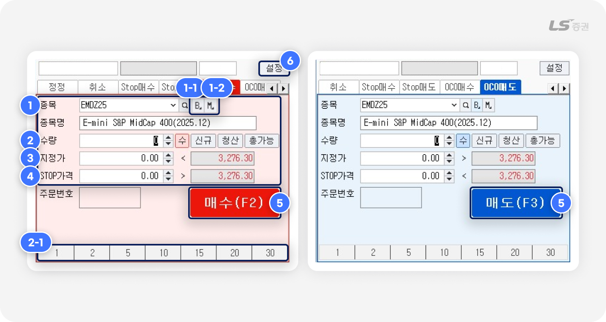
-
1
종목 선택
- 원하는 종목을 직접 입력하여 검색하거나, 검색 아이콘을 클릭하여 팝업에서 상품군 분류에 따라 선택할 수 있습니다.
- (1-1번) B는 기초자산(Base) 상품군에서 원하는 상품을 선택할 수 있습니다.
- (1-2번) M은 조회중인 상품의 만기월물(Month)을 선택할 수 있습니다.
-
2
주문 수량 입력
- 가격을 직접 입력하거나 ‘수’ 버튼을 클릭하여 팝업에서 수량을 선택할 수 있습니다.
- ‘신규’ 클릭 시 신규 주문 가능한 계약수가, '청산' 클릭 시 청산 가능한 보유잔고가 입력됩니다.
- ‘총가능’ 버튼 클릭 시 신규 및 청산 가능한 총 주문가능 수량이 입력됩니다.
-
수량 입력 버튼(4-1번) 클릭 시 해당 수량이 누적 입력됩니다.
(예 : 매수 주문창에서 수량 '5' 와 '20' 버튼 클릭 시 '25' 입력)
-
3
지정가 입력
- 매수 / 매도 주문 가격을 직접 입력할 수 있습니다.
-
4
조건가격 입력
- STOP 주문 조건에 사용되는 가격을 입력합니다.
- 1) OCO 매수 주문의 경우 : 지정가 < 현재가 < STOP 가격(조건가) 요건이 되도록 가격을 설정합니다.
- 2) OCO 매도 주문의 경우 : STOP 가격(조건가) < 현재가 < 지정가 요건이 되도록 가격을 설정합니다.
- ※ STOP 가격과 지정가는 최소 20틱 이상의 차이가 있어야 합니다.
-
5
매수 주문 / 매도 주문
- 직접 클릭하거나 단축키로 매수 주문(F2) 또는 매도 주문(F3)을 할 수 있습니다.
- 주문 접수 후 아래 가격 도달 요건에 따라 주문이 다르게 처리됩니다.
- 1) 지정가 주문가격 도달 후, 지정가 주문이 전량 체결 시 : STOP 주문은 취소됩니다.
- 2) 지정가 주문가격 도달 후, 지정가 주문이 일부 체결 시 : 미체결 잔량만큼 지정가 주문 및 STOP 주문이 모두 유효합니다.
- 3) STOP 조건가격 도달 시 : 미체결 상태의 지정가 주문 잔량은 취소되고, 미체결 잔량만큼 시장가에 주문이 접수됩니다.
-
6
설정
- 주문확인창, 수량 입력 버튼, 주문 후 초기화 등 주문 관련 설정을 할 수 있습니다.
예를 들어 볼까요?
(신규 주문)
현재가 100일 때, 90에 신규 매수하고 싶으나, 만약 110 이상 오른다면 바로 매수하기를 원할 때
-
→ 지정가 90, Stop 가격(조건가) 110으로 'OCO 매수' 1계약 집행
(증거금은 1계약 해당액만큼만 필요) - → 90과 110 중 먼저 도달하는 쪽으로 매수 체결, 나머지 하나는 소멸됨
예를 들어 볼까요?
(청산 주문)
매도 1계약 보유 중이며 현재가 100일 때, 90에 청산하여 이익을 실현하고 싶으나, 만약 110 이상 오른다면 바로 청산하여 손절하기를 원할 때
-
→ 지정가 90, Stop 가격(조건가) 110으로 'OCO 매수' 1계약 집행
(청산주문이기 때문에 증거금은 추가로 필요하지 않음) - → 90과 110 중 먼저 도달하는 쪽으로 매수 체결, 나머지 하나는 소멸됨
주의하세요!
- 해외선물옵션 OCO 주문은 네트워크 장애, 시세지연, 천재지변 등 다양한 요인에 의해 정상적으로 작동하지 않을 수 있으니 반드시 사용법과 유의사항을 숙지하신 후 이용하여 주시기 바랍니다.
-
OCO 주문은 부가서비스 주문 형태이며 여러 가지 사유로 주문이 정상적으로 접수되지 않을 수 있습니다.
OCO 주문을 접수한 뒤에도 수시로 주문 현황 및 잔고를 확인하여 자산의 손실이 발생하지 않도록 유의하셔야 합니다. - 아래 유의사항을 숙지하지 않아 발생한 손해에 대해서는 당사에서 책임을 지지 않으니 유의해 주세요.
- 당사 해외선물 OCO 주문은 HTS 등 주문매체를 로그아웃(종료)하여도 해당일 장 종료시까지 유효합니다.
- Stop 가격(조건가) 도달 여부는 현재가(체결가) 데이터가 들어오는 시점을 기준으로 판단하며, 네트워크 장애, 시세 지연, 천재지변 등의 요인에 의해 실제 시세 도달 시점과 시차가 존재할 수 있습니다.
- Stop 가격(조건가) 도달시에는 당사 서버에서 자동으로 지정가 주문 미체결 잔량을 소멸시키고 그 수량만큼 시장가로 주문을 접수하며, 따라서 이 때 Stop 가격(조건가)와 실제 체결가격은 상이할 수 있습니다. (Stop Market 주문과 동일)
- 시세가 급변하여 순간적으로 Stop 가격(조건가)에 도달 후 바로 반등 또는 반락하였을 경우 '지정가 주문 소멸 및 Stop(시장가) 주문 집행 절차' 가 이루어지지 않을 수 있습니다. 이 경우 지정가 주문과 Stop(시장가) 주문은 계속 유효하게 됩니다.
- 시스템 장애로 인한 백업서버 전환 처리 시 주문 중지 또는 원하지 않는 호가에 주문이 처리될 수 있습니다.
- 시스템 전체 혹은 부분 장애, 특정부분의 오류(운영장비, 프로그램, 시세 등), 시스템 백업 전환 등으로 인하여, 서비스 지속보다 중지가 필요하다고 판단되는 경우, 전체 주문에 관하여 정지시킬 수 있습니다.
- 본 주문은 시장가 주문을 허용하지 않는 거래소(SGX, HKEX) 상품에 대해서는 실행이 불가합니다.
- 가격 설정 시 OCO 매매 가격 설정에서 제시한 조건 중 하나라도 충족되지 못할 경우 본 주문은 실행되지 않습니다.
- OCO 주문은 정정할 수 없으며, 취소만 접수할 수 있습니다. 취소 주문을 접수하면 OCO 지정가, OCO Stop 주문이 일괄 취소되며, 둘 중 하나만 개별 취소하는 것은 불가능합니다.
- [5965] 해외선물 빠른호가주문 화면의 호가창에서는 OCO주문 조회 및 실행을 할 수 없으며, 동 화면의 '일괄 취소' 기능을 실행해도 OCO주문은 취소되지 않습니다. (단, 주문내역에서는 조회됨)
- OCO Stop 주문은 현재가(체결가)가 Stop 가격(조건가)에 도달하기 전까지는 '미체결' 내역에 표시되지 않고 '주문내역'에만 표시됩니다.
- 고객의 고의, 과실, 전산기기 조작 오류로 인하여 발생한 손해
- 회사는 공지의 의무를 다하였으나 고객이 본 서비스 이용에 대한 이해 부족으로 발생하는 손해
- 회사가 신의성실의 주의 의무를 다하였음에도 부득이하게 발생하는 오류 정보로 인한 손해
- 회사에 책임이 없는 컴퓨터 범죄로 인하여 발생한 손해
- 고객의 비밀번호 관리 소홀로 발생한 주문으로 인한 손해
- 전시, 사변, 천재지변, 기타 불가항력 등으로 인한 전산 및 회선 장애로 발생한 손해
- 당사와 무관하게 거래소, 해외 FCM 등 대외기관의 주문/체결 지연, 시세 지연, 시세 오류 등으로 인하여 발생한 손해
설정
화면 표시 방법이나 주문 방법을 편의에 맞게 설정할 수 있습니다.
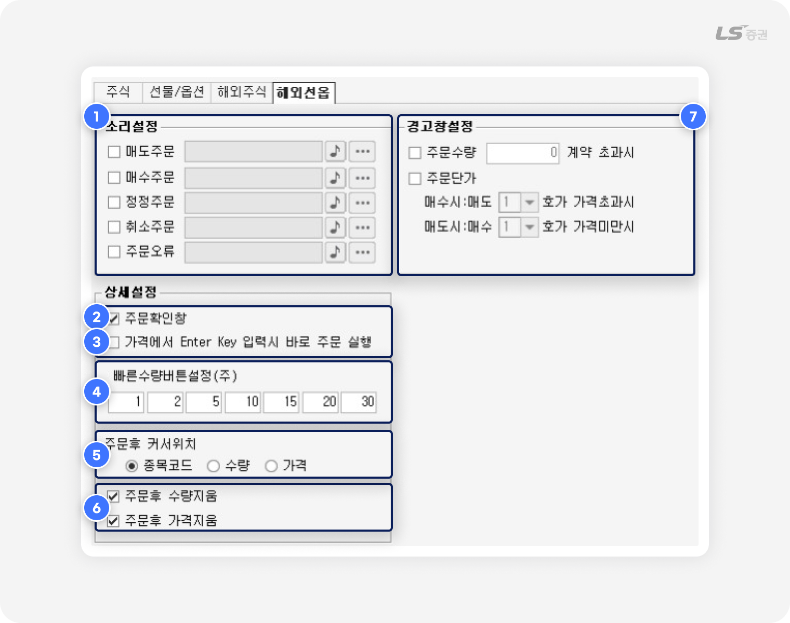
-
1
주문 접수가 완료되거나 주문 오류 발생 시 소리로 알려주는 알림음을 설정할 수 있습니다.
-
2
주문확인창 : 체크 시 착오주문 방지를 위해 주문 실행 전 확인창을 표시합니다.
-
3
Enter Key 입력시 주문 실행 : 체크 시 가격 입력창에서 엔터(Enter) 키 입력 시 즉시 주문이 접수됩니다.
-
4
빠른 수량 버튼 설정 : · 클릭 시 주문수량이 자동으로 누적 입력되는 버튼을 7개까지 설정할 수 있습니다.
-
5
주문후 커서위치 : 주문 후 커서가 이동할 곳을 지정합니다.
-
6
주문후 수량 / 가격지움 : 체크 후 주문 시 입력한 수량 또는 가격을 주문 실행 후 유지하지 않고 삭제합니다.
-
7
매수/매도 주문 시 설정한 조건에 부합할 경우 주문 전 경고창을 표시해 주문 실수를 방지하도록
도와줍니다.
주의하세요!
- ‘주문확인창 보기’ 체크를 해제하면 확인 절차를 생략하기 때문에 되돌릴 수 없는 주문 실수가 발생할 수 있습니다. 이 점에 유의하여 신중히 설정해 주세요.
시장마다 언어가 다르고 시차도 존재하지만, 전략은 하나의 원칙으로 통합니다.
[5961] 해외선물옵션 주문종합 화면은 그 전략을 실현하는 가장 빠른 길이 될 것입니다.
글로벌 시장의 무대에서, 다음 기회를 준비하세요.
감사합니다!